Připravili jsme pro Vás možnost nahlédnout do našeho aktuálního jídelního a nápojového lístku i prohlédnout si fotografie interiéru. Restaurace, salónek a letní zahrádka pro rodinné a firemní oslavy — se specialitami ze zvěřiny.
Vážení hosté, vítáme Vás na stránkách restaurace Nimrod a přejeme Vám, abyste se v tomto virtuálním prostoru cítili stejně dobře jako v restauraci skutečné.
„Své postřehy nám, prosím, sdělte — Vaše názory jsou nám vodítkem ke stále lepším službám.“
— Roman Gelner, majitel firmy
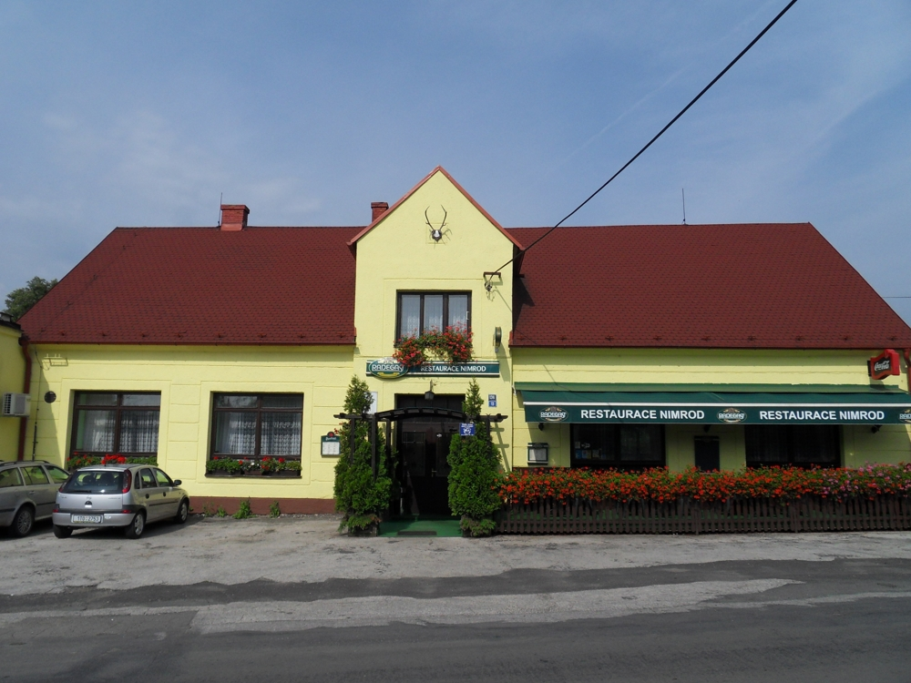
| Pondělí | 10:00 — 23:00 |
| Úterý | 10:00 — 23:00 |
| Středa | 10:00 — 23:00 |
| Čtvrtek | 10:00 — 23:00 |
| Pátek | 10:00 — 24:00 |
| Sobota | 10:00 — 24:00 |
| Neděle | 10:00 — 24:00 |
Polední menu podáváme i o víkendech, denně 10:00 — 14:00.
Naše restaurace sídlí na adrese Frýdecká 136, Vratimov, okres Ostrava.
IČ: 12662071 · DIČ: CZ6208082287
Nahlédněte do interiéru, na letní zahrádku i na naše speciality — klikněte na fotografii pro zvětšení.
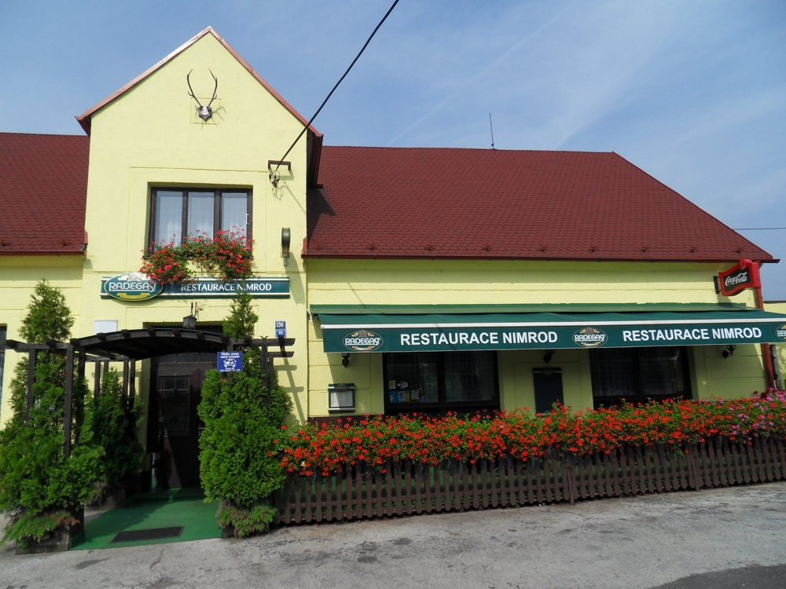
Exteriér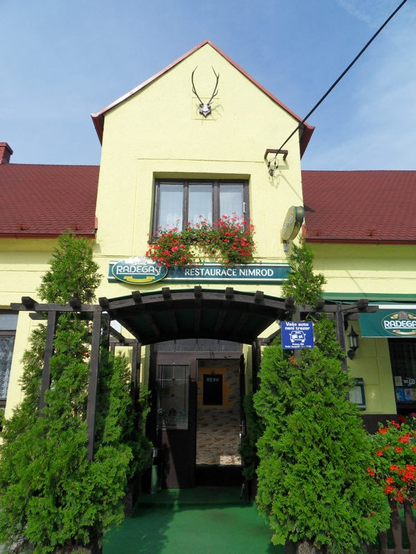
Exteriér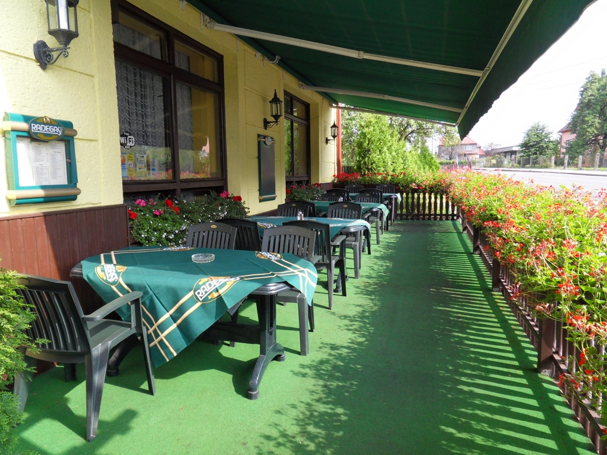
Letní zahrádka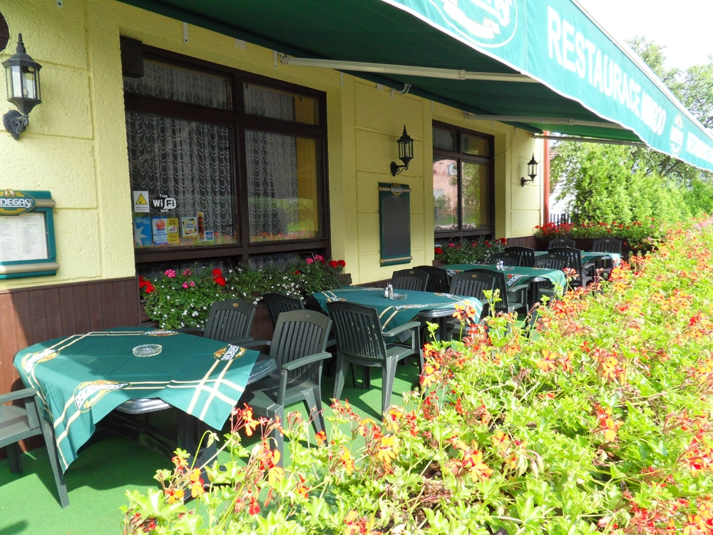
Letní zahrádka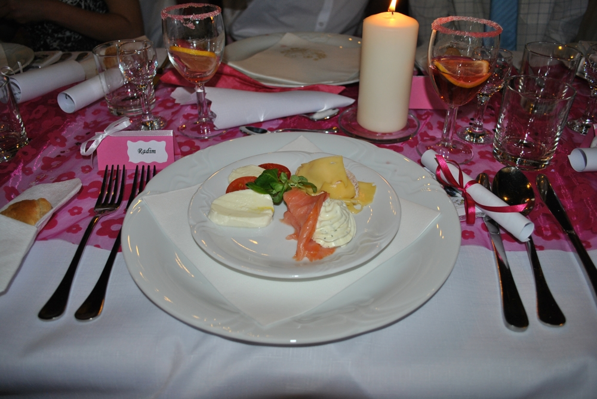
Jídlo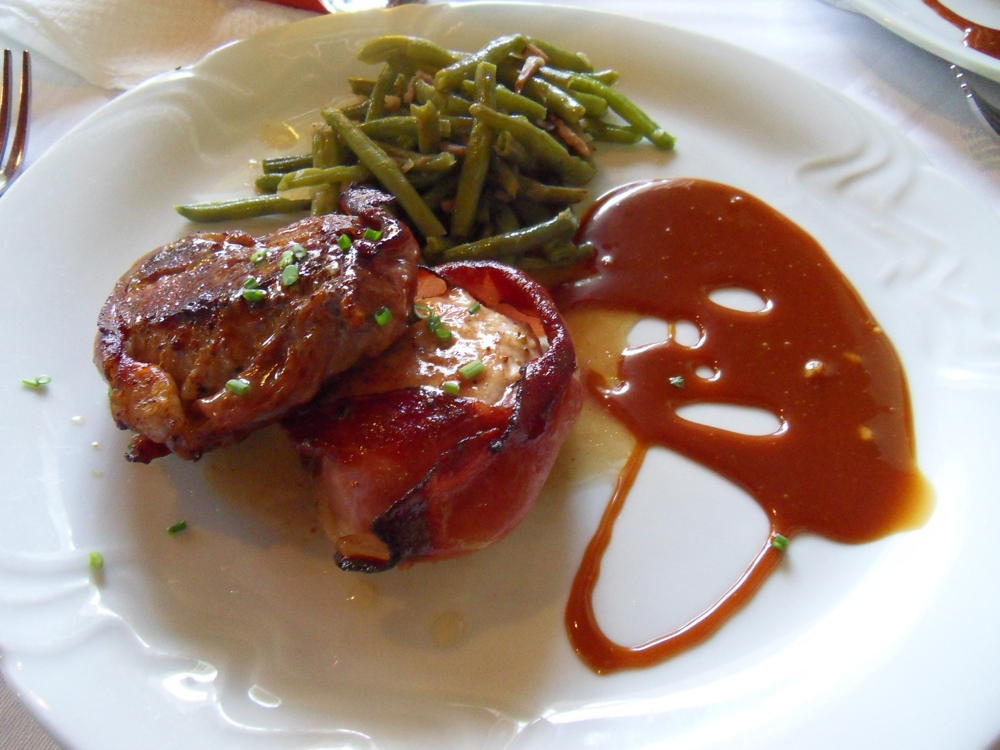
Jídlo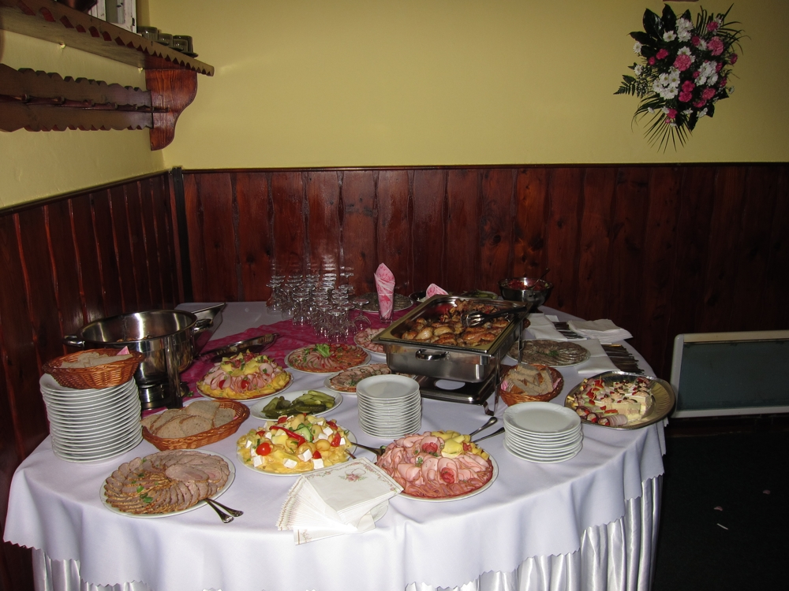
Interiér & rauty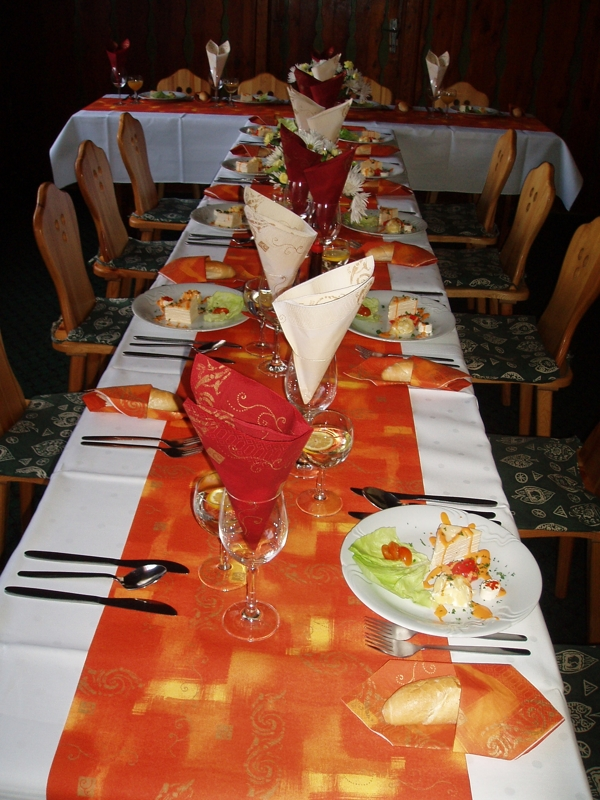
Salónek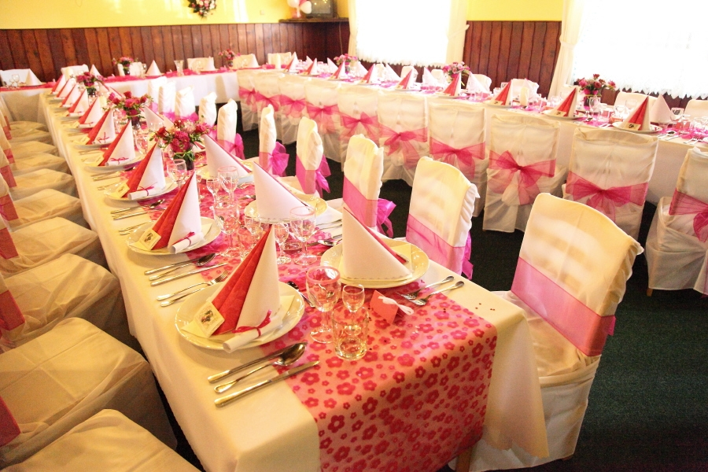
Slavnostní tabule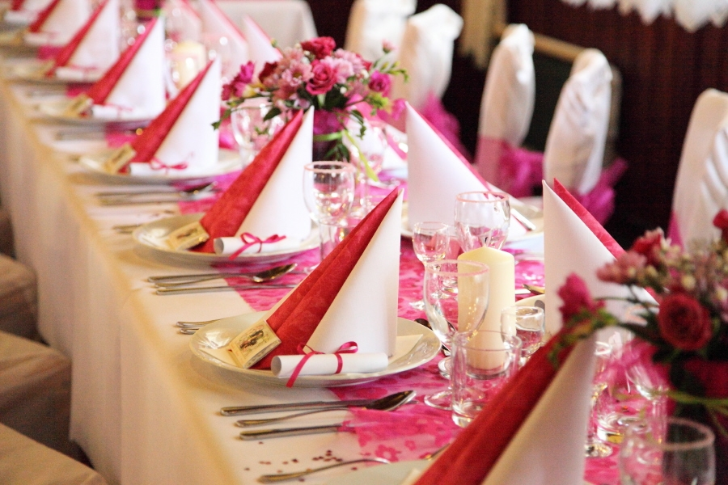
Slavnostní tabuleRezervace míst na telefonu níže — rádi Vám poradíme i s výběrem menu na Vaši oslavu.
Frýdecká 136
739 32 Vratimov, okres Ostrava
IČ: 12662071
DIČ: CZ6208082287
Navštivte i náš další podnik — Restaurace U Šodka ve Vratimově.